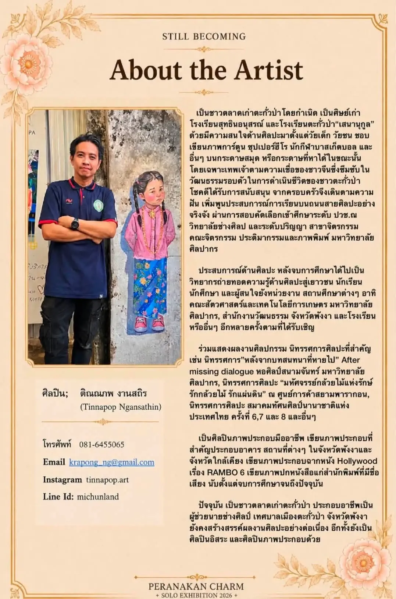

รู้จักช่างป๋อง
About the Artist
ติณณภพ งานสถิรTinnapop Ngansathin
เป็นชาวตลาดเก่าตะกั่วป่าโดยกำเนิด เป็นศิษย์เก่าโรงเรียนสุทธิธรรมอนุสรณ์ และโรงเรียนตะกั่วป่า “เสนานุกูล” สนใจศิลปะมาตั้งแต่วัยเด็ก ชอบเขียนภาพการ์ตูน ซุปเปอร์ฮีโร นักกีฬาบาสเก็ตบอล และเทพเจ้าตามความเชื่อของชาวจีนที่ซึมซับอยู่ในวัฒนธรรมรอบตัวของชาวตะกั่วป่า
เรียนต่อระดับ ปวช. ณ วิทยาลัยช่างศิลป และระดับปริญญา สาขาจิตรกรรม คณะจิตรกรรม ประติมากรรมและภาพพิมพ์ มหาวิทยาลัยศิลปากร หลังเรียนจบเป็นวิทยากรถ่ายทอดความรู้ด้านศิลปะให้เยาวชนและหน่วยงานต่าง ๆ
ร่วมแสดงนิทรรศการศิลปะสำคัญ เช่น “หลังจากบทสนทนาที่หายไป” หอศิลป์สนามจันทร์ มหาวิทยาลัยศิลปากร · “มหัศจรรย์กล้วยไม้แห่งรักษ์” ศูนย์การค้าสยามพารากอน · นิทรรศการศิลปะ สมาคมทัศนศิลป์นานาชาติแห่งประเทศไทย ครั้งที่ 6, 7 และ 8
เป็นศิลปินภาพประกอบมืออาชีพ เขียนภาพประกอบอาคารและสถานที่ต่าง ๆ ในจังหวัดพังงาและจังหวัดใกล้เคียง เขียนภาพประกอบฉากภาพยนตร์ฮอลลีวูดเรื่อง RAMBO 6 และเขียนภาพปกหนังสือให้สำนักพิมพ์ที่มีชื่อเสียง ปัจจุบันเป็นผู้ช่วยนายช่างศิลป์ เทศบาลเมืองตะกั่วป่า จังหวัดพังงา และยังเป็นศิลปินอิสระ
“ผลงานจิตรกรรม มนต์เสน่ห์เปอรานากัน คือหลักฐานที่แสดงตัวตนทุกช่วงเวลาตลอดเส้นทางการดำเนินชีวิต หล่อหลอมให้เติบโตในฐานะมนุษย์ผู้หลงใหลในศิลปะ ท่ามกลางวัฒนธรรมเปอรานากัน”Artist Statement · Still BecomingInstagram · tinnapop.art